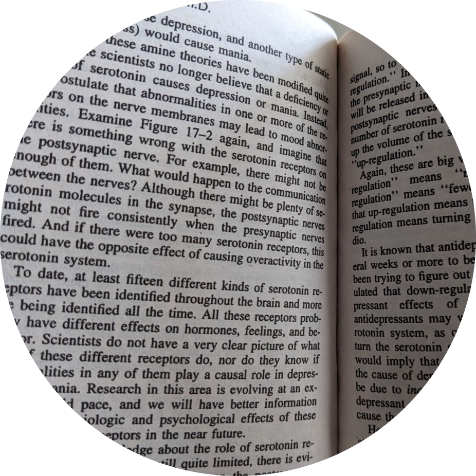
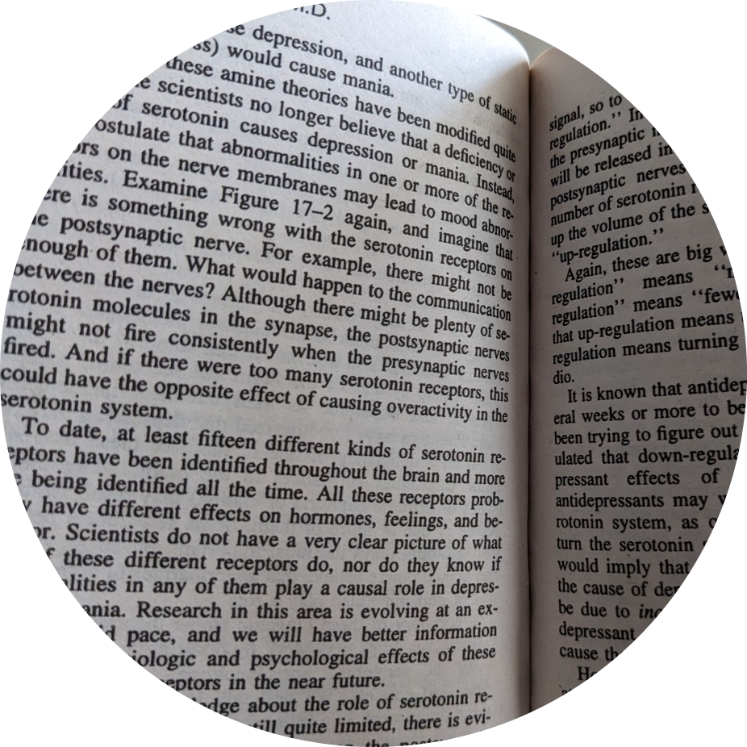
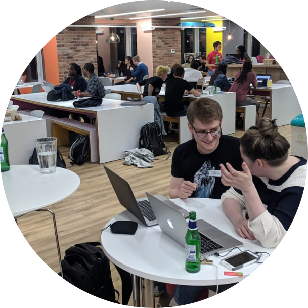
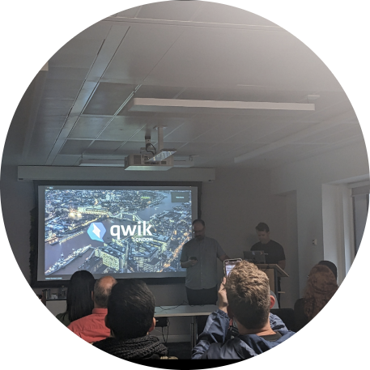

The Performing Arts
Having grown up taking ballet, tap, modern dance, piano, violin and speech & drama lessons, I have a deep appreciation for all aspects of the performing arts. Taking examinations in these areas on a yearly basis meant that I spent many an hour honing these skills, competing in competitions, performing at concerts, including local Young Musician concerts, ABRSM High Scorers Concerts, and other concerts. I've also performed in various dance shows and musicals, including a performance at the John Smith's Stadium in Huddersfield. Last year I joined the dance studio At Your Beat, based in central London
Wellbeing


I've been interested in meditation and buddhism since my university days. I'm currently especially interested in the Gut-Brain axis and the microbiome. Proponent of Professor Tim Spector (Kings College London), Dr Will Bulsiewicz (author of Fibre Fuelled), and Professor Felice Jacka - all who have examined the impact that improving gut diversity may have on improving mood. I enjoy attending wellness events such as Balance Festival, which I will be in attendance at this year."
Fitness

.png)
I'm a member of the FitDevs community; a community of developers who encourage each other to improve ourselves, our physical and mental health through exercise. I'm a Just Strong Ambassador and try to do at least 300 minutes of vigorous exercise each week (running, treadmill, gym classes, dance, exercise bike, swimming)
Mental Health
 

I'm especially interested in the role that a diverse microbiome and aerobic exercise have on our mental health. I find myself returning to the book Spark - by Dr John Ratey, time and time again"
Technology
Almost all of my professional experience so far has been in a frontend-capacity. However, I am interested in back-end development, security and cloud-computing. I hope to achieved my AWS Cloud Practitioner certification by the end of the year.
Tech
As a developer I am, naturally, interested in all-things tech. I strive to keep up-to-date with the latest news and trends through various means such as reading TechCrunch,
TechRadar, Wired, by listening to podcasts such as the LadyBug podcast, and simply by being part of the developer community on Twitter.
I also try to attend tech meetups when I can such as
(from left to right): Node Girls London at Financial Times, an android development workshop,
organised by Codebar and hosted by Trainline, a Women in Tech event at Twitter, a Codebar workshop hosted by Google, AthenaHack- an all-female
hackathon and event hosted by Queen Mary, University of London, Rails Girls London hosted by Deliveroo.. I very recently attended the launch
of Qwik.
 
Languages and travel
There is something thrilling about being able to understand and communicate in another language and having studied modern languages at university, I've had the opportunity to learn a handful of languages; French, German and Dutch and a little Spanish.
Studying languages also gave me the opportunity to live and work abroad; I worked in Brittany, France for six months before moving to Heidelberg to study at Germany's oldest university - the Ruprecht Karls Universitaet Heidelberg. If time permitted I would love to learn Irish. In the past I have volunteered for the pan-European magazine Cafebabel, translating articles from German into English and from French into English. Profile: "